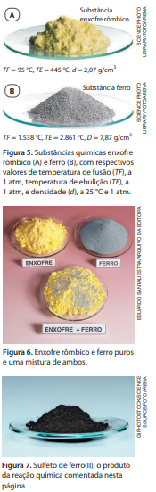

2. Reação(transformação)química
O experimento descrito permite a você realizar e observar um dos muitos exemplos de reação química. Uma substância (denominada ácido acético) presente no vinagre reage quimicamente com a substância chamada bicarbonato de sódio, produzindo novas substâncias. Uma dessas substâncias produzidas é um gás (chamado dióxido de carbono, ou gás carbônico), cujo desprendimento pode ser observado (a evidência visual são as bolhas formadas) ao realizar o experimento.
Os cientistas dão muita atenção ao estudo das transformações, isto é, alterações ou modificações de qualquer natureza. Para perceber que uma transformação ocorreu, escolhem um sistema e o observam no transcorrer do tempo. Um sistema é uma porção de matéria que foi escolhida para ser estudada, observada. Um sistema pode ser constituído por uma substância pura ou por uma mistura de substâncias.
Para verificar a ocorrência de transformação num sistema, é necessário descrevê-lo em instantes diferentes. Ao fazer o experimento descrito anteriormente, você observou um mesmo sistema antes e depois de uma transformação que envolveu o bicarbonato de sódio e o ácido acético presente no vinagre. Quando consideramos duas observações de um sistema, feitas em instantes diferentes, dizemos que a primeira se refere ao estado inicial do sistema e a segunda, ao estado final do sistema.
Se uma ou mais substâncias, presentes no estado inicial de um sistema, transformam-se em uma ou mais substâncias diferentes, que estarão presentes no estado final, a transformação é uma reação química, ou transformação química.

Você pode estar se perguntando: como os químicos têm certeza de que uma
reação química aconteceu? Bem, uma substância
química é caracterizada por
suas propriedades, tais como densidade, temperatura de fusão, temperatura de
ebulição, cor, odor etc.
Duas substâncias diferentes podem, eventual mente, ter
algumas propriedades iguais, mas nunca todas elas. Para saber se ocorreu
uma
reação química, precisamos comparar as propriedades das substâncias presentes
no sistema, nos estados inicial e final.
Consideremos um exemplo.
Enxofre rômbico (Fig. 5.A) e ferro (Fig. 5.B) são caracterizados por suas propriedades; cada qual tem
sua temperatura de fusão,
densidade, cor etc. (Existe
outra substância, chamada enxofre monoclínico, que tem algumas propriedades
distintas das do enxofre
rômbico, escolhido aqui como exemplo.) Uma característica interessante do
ferro é que ele é atraído por um ímã. Já o enxofre rômbico
não é. Se misturarmos os dois, pulverizados, obteremos uma mistura (Fig. 6) na
qual cada um dos componentes mantém suas
propriedades. Isso torna possível
usar um ímã para separar o ferro da mistura. Verifica-se, assim, que a simples reunião de enxofre
e
ferro não causa sua transformação em uma nova substância,
ou seja, não é um exemplo de reação química.
Contudo, se essa mistura for aquecida, em condições adequadas, ocorrerá
um processo no qual enxofre rômbico e ferro se
transformarão num sólido preto
(Fig. 7). Determinando as propriedades desse sólido preto formado, é possível
perceber que são
distintas das propriedades do enxofre rômbico e do ferro.
Ele apresenta temperatura de fusão 1.188 °C (a 1 atm), densidade
4,74 g/cm3
(a 25 °C e 1 atm) e não é atraído por um ímã. Trata -se de uma substância química
diferente do enxofre rômbico e do ferro,
que é denominada sulfeto de ferro(II).
Conforme mencionamos anteriormente, quando uma ou mais substâncias
transformam -se em uma ou mais substâncias diferentes,
essa transformação
é denominada reação química, ou transformação química. Assim, se enxofre
rômbico e ferro são aquecidos
juntos, ocorre uma reação química, que pode ser
assim representada:
enxofre rômbico + ferro → sulfeto de ferro(II)
Nessa representação, o sinal de mais (+) significa “e”, e a seta (→) pode ser entendida como
“reagem quimicamente
transformando -se em”, ou, simplesmente,
“transformam -se em“. Portanto, está representado que enxofre rômbico e ferro
transformam -se em sulfeto de ferro(II).
Reagentes e produtos
As substâncias inicialmente existentes e que se transformam em outras em uma reação química são denominadas reagentes, e as novas substâncias produzidas são chamadas produtos. No exemplo em questão:
etanol + gás oxigênio → gás carbônico + água
ㅤㅤreagentes
ㅤㅤㅤㅤㅤ
produtos
Essa representação pode ser interpretada como: etanol e gás oxigênio transformam -se em gás carbônico e água.